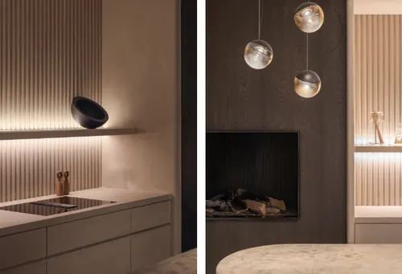

El poder de la iluminación en la amplitud de tus espacios

La luz juega un papel psicológico y visual determinante en cómo percibimos los metros cuadrados de nuestra casa. A menudo gastamos grandes sumas en cambiar el color de las paredes o botar tabiques, cuando el verdadero secreto para ganar amplitud visual radica en un diseño de iluminación inteligente y estratificado.
Para lograrlo, los expertos recomiendan combinar tres tipos de luz: la iluminación general (focos de techo o plafones), la iluminación puntual (lámparas de pie o de lectura) y la iluminación ambiental o decorativa. Al jugar con luces cálidas en zonas de descanso y neutras en áreas de trabajo, no solo logramos cuidar la salud visual de la familia, sino que transformamos por completo la profundidad y el dinamismo estético de cada habitación.
Volver al Blog